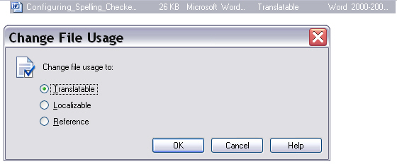
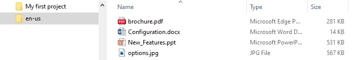
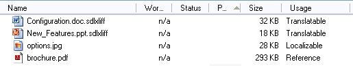

Adding Files and Folders
In Trados Studio a project requires at least one translatable file. Translatable files can be, for example, Microsoft Word, PowerPoint, etc. documents. Beyond that, a project can also contain reference files. These are untranslatable (e.g. pictures), which can help translators do their job, as they may contain useful information. In addition to that a project can contain so-called localizable files. Localizable files cannot be processed by Trados Studio. These can gain be, for example, bitmap graphics. However, these files contain localizable content (e.g. text in screenshots), which has to be handled outside of Trados Studio. For this, translators can enter the target strings, for example, in a separate text file (legend), or use a graphics program to handle the localizations. This chapter contains an example of how to add files to a project programmatically, and change the file usage to e.g. localizable.
Implement the Function for Adding Files
To add files to a project, you need to apply the AddFiles method to the project object. This method takes a string array as parameter that contains the names and the full path of the file(s) to add to the project. In our example, we 'outsource' the string array to a separate helper function called AddProjectFiles, e.g.:
ProjectFile[] files=newProject.AddFiles(this.AddProjectFiles(@"c:\ProjectFiles\Documents\"));
The helper function that returns the file name string array looks as shown below:
public string[] AddProjectFiles(string path)
{
string[] projectFiles =
{
path + "brochure.pdf",
path + "Configuration.doc",
path + "New_Features.ppt",
path + "options.jpg"
};
return projectFiles;
}
The following screenshot illustrates how the source documents to process are added in the New Project wizard of Trados Studio:

When adding files in Trados Studio, they are automatically scanned in order to determine whether they are translatable or not. If a suitable file type definition is found, the file is assumed to be translatable. For example, Trados Studio offers a file type definition that supports Microsoft Word documents. If you add a .doc file to a project, the scan task will mark it as a translatable document. Since pixel graphics (.jpg) are not supported, such files will be marked as reference, as no file type definition is available for this format, which cannot be processed in Trados Studio. The sample code below demonstrates how the automatic scan task can be programmatically performed on the source files that have just been added to the project. Trados Studio typically scans files immediately after adding them. When applying the RunAutomaticTask method to a project, you need to provide the file ids and the id of the task (i.e. Scan) as parameters:
AutomaticTask scanFiles = newProject.RunAutomaticTask(
newProject.GetSourceLanguageFiles().GetIds(),
AutomaticTaskTemplateIds.Scan);
Though the scan task makes the determination of whether a file is translatable or not, users can manually change the file usage. Example: A PDF file is added to a project. Trados Studio offers a file type definition for PDF, so it is by default marked as translatable. However, if the project manager does not want this file to be translated, but provides it as pure reference, he/she can change the file type usage to Reference. Another example: A BMP file is automatically assumed to be a reference file, as there is no file type definition for processing it. However, if the project manager wants the translator to handle the content in the BMP file (e.g. strings shown in a screenshot), he/she can change its file type usage to Localizable, so that the translator knows that it has to be handled somehow outside of Trados Studio, e.g. in Adobe PhotoShop. Alternatively to adding single files, you can also add the content of an entire folder by applying the AddFolderWithFiles method to the project. This method takes the folder to add as parameter. Moreover, through a boolean parameter you can determine whether recursion should be used to add the files from any sub-folders, e.g.:
newProject.AddFolderWithFiles(@"c:\temp", true);
Change the File Usage (Role)
As mentioned above, Trados Studio allows you to change the file usage manually, for example, if you want to set a * .ppt file (which is automatically recognized as a translatable) to reference, because it is not supposed to be translated, but should only be provided for information purposes. The screenshot below illustrates how this is done in the New Project wizard of Trados Studio:

Suppose you want to change the usage (role) of two files:
- brochure.pdf has been identified as a translatable file, however, its usage should be changed to Reference.
- options.jpg has been identified as a reference file, however, since it is a screenshot, it should be marked as Localizable.
Implement a dedicated helper function for setting the role of a specific file. This function should be called SetFileRole and should take the following parameters:
- A FileBasedProject. object
- The name of the file whose role should be changed (string)
- The FileRole value to set
For our two sample files the function can be called as shown below:
this.SetFileRole(newProject, "brochure.pdf", FileRole.Reference);
this.SetFileRole(newProject, "options.jpg", FileRole.Localizable);
The function itself applies the GetSourceLanguageFiles method to the project to retrieve all source documents. It then loops through the documents until it finds the file with the specified name, and adapts its role accordingly. Note that each file in a project is uniquely identified by an id (guid). The SetFileRole method takes a file guid array as parameter. In our implementation we declare a guid array, even if only the role of one file at a time is adapted.
private void SetFileRole(FileBasedProject project, string fileName, FileRole role)
{
ProjectFile[] files = project.GetSourceLanguageFiles();
for (int i = 0; i < files.Length; i++)
{
if (files[i].Name == fileName.ToLower())
{
Guid[] fileId = { files[i].Id };
project.SetFileRole(fileId, role);
break;
}
}
}
After adding the source files as outlined above the project folder should now also contain a sub-folder that corresponds to your selected source language, i.e. en-US. It contains the four source documents that you have added, which were copied into that sub-folder.

If you were to open the programmatically created * .sdlproj file in Trados Studio, and switched to the Files view, you would see the documents listed as shown below. Note that in the column Usage the last two files are marked as Reference and Localizable, as you changed the role of these two project files:

See Also
Running Tasks on the Project Files